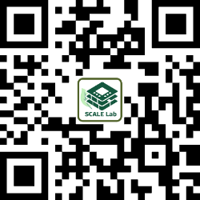

- “基於FeRAM之超維計算記憶體內搜尋引擎於三維點雲辨識系統之設計,” 吳承祐、楊靖姮、黃資涵, 智慧創新大賞佳作, 經濟部, 2026.
- Best Ph.D. Dissertation Award, Wei Lu, IEEE Taipei Section, 2026.
- Best Doctoral Dissertation Award (Honorable Mention), Wei Lu, Institute of Electronics, NYCU, 2025.
- “矽/鍺單晶島積層型三維積體電路技術,” Future Technology Award, National Science and Technology Council (NSTC), Taiwan, 2022.
- “Monolithic 3D-IC Structure and Fabrication Using Location-Controlled-Grain Technique,” Future Technology Award, Ministry of Science and Technology (MOST), Taiwan, 2019.
永續導向晶片電路與架構實驗室
Sustainable Circuits and Architectures for Layered Eco-chips Lab
National Yang Ming Chiao Tung University
